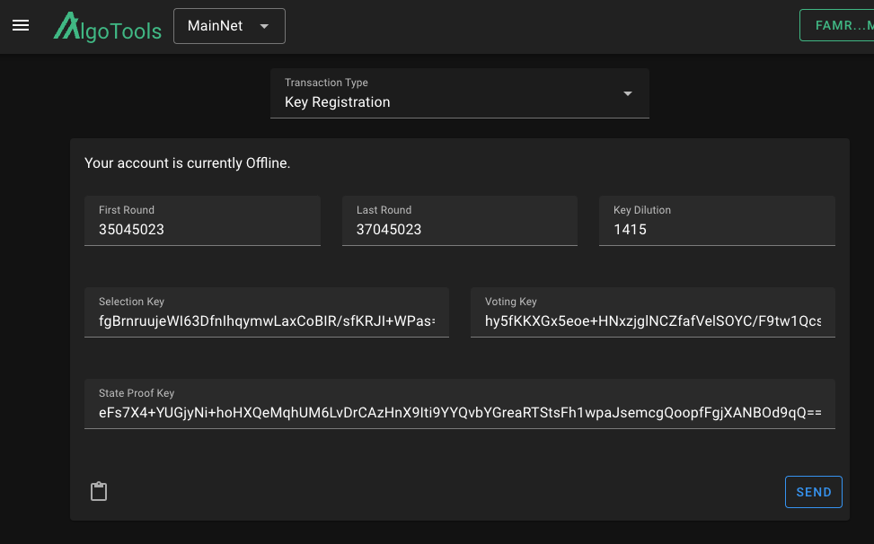
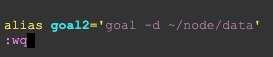

Example Result: 35010000#SNDMPTP6DSMAFJQOPV432IEBU4OZQJBU3GGVBDRG2ULWSB3C7L4A
goal node catchup RESULTS-FROM-CATCHUP-POINT
² Monitor & Wait for node to fully sync
Node will be fully synced when ALL catchpoint lines disappear & when Sync Time continously resets to 0s (This process can take 1-2 hours)
Once your node is caught up, CTRL + C to exit status watch & proceed
goal node status -w 1000
Example of fully synced node
Generate Participation Keys
¹ Generate Participation Keys For Your Desired Address
NOTE: You do not NEED to import your wallet
NOTE: If using Folks Finance, use your ESCROW ADDRESS
Instructions:
Set WALLET-ADDRESS to your address or Folks Finance escrow address
Set roundFirstValid to the current block (Example: 35,045,023)
Set roundLastValid to the current block + 2,000,000 (Example: 37,045,023)
When typing out the blocks, do not use commas (Example: 35045023)
This process can take 5-10 minutes
goal -d ~/node/data account addpartkey -a WALLET-ADDRESS --roundFirstValid=CURRENT-BLOCK --roundLastValid=CURRENTBLOCK+2MILLION
Folks Finance Consensus
NOTE: This section is only to be done if you plan on using Folks Finance
for governance. If you do not intend on using Folks Finance, proceed
to the next section, Go Online.
Using the goal account partkeyinfo command Copy/Paste the required information into the Folks Finance Consensus Participation Box
³ Register To Go Online
Click Register to initiate the keyreg transaction
You can verify success by viewing the Consensus Participation Box
You can also verify participation by heading to the Algorand explorer Allo'
Search Allo' for your Folks Finance escrow address and look for the validator badge under your address
NOTE: You have completed the Algorand node guide. Wait at least 320 rounds(blocks) to validate that the node is participating.
NOTE: If you are running D13's VOI install alongside this Algorand node on the same machine, GO TO THE Switch Between ALGO/VOI Nodes section for important information.
Congratulations, you have succesfully joined Algorand Consensus. You are now an Algorand noderunner.
Sign into Wallet > Compose Transaction > Transaction Type == Key Registration
Using the goal account partkeyinfo command Copy/Paste the required information into the AlgoTools Key Registration Box

³ Register To Go Online
Click Send to initiate the keyreg transaction
You can verify success by viewing the resulting Key Registration Box
You can also verify participation by heading to the Algorand explorer Allo'
Search Allo' for your wallet address and look for the validator badge under your address
NOTE: You have completed the Algorand node guide. Wait at least 320 rounds(blocks) to validate that the node is participating.
NOTE: If you are running D13's VOI install alongside this Algorand node on the same machine, GO TO THE Switch Between ALGO/VOI Nodes section for important information.
Congratulations, you have successfully joined Algorand Consensus. You are now an Algorand noderunner.
Update Node
¹ Display Current Build
goal version -v
² Run The Update Command
NOTE: My node is already using the latest build. When you run this command, if an update exists, the update will be applied.
cd cd node ./update.sh -d ~/node/data
³ Verify Update/Display Current Build
goal version -v
Renew Participation Keys
¹ Display Current Participation Key Info
goal account partkeyinfo
² Using The Information From goal account partkeyinfo, Create A New Participation Key
that is less than the last voting round
You can Renew a Participation Key at anytime before it expires
Make sure to renew at least a few thousand blocks before your last round
This will ensure that your node will not risk having an account marked as online that is not participating.
Generate New Participation Keys
³ Generate Participation Keys For Your Desired Address
Instructions:
Set WALLET-ADDRESS to your address or Folks Finance escrow address
Set roundFirstValid to the current block (Example: 35,099,076)
Set roundLastValid to the current block + 2,000,000 (Example: 37,099,076)
When typing out the blocks, do not use commas (Example: 35099076)
This process can take 5-10 minutes
goal -d ~/node/data account addpartkey -a WALLET-ADDRESS --roundFirstValid=CURRENT-BLOCK --roundLastValid=CURRENTBLOCK+2MILLION
Sign The Updated Keyreg Transaction
³ Use Folks Finance or AlgoTools to Sign Updated Keyreg
Instructions:
Using the goal account partkeyinfo command from earlier in this guide
Copy paste the relevant information into Folks Finance or AlgoTools.
Refer to the "Folks Finance Consensus" or "Go Online" sections for instructions if you need them again.
Sign into Wallet > Compose Transaction > Transaction Type == Key Registration
Click GO OFFLINE
Switch Between ALGO/VOI Nodes
These instructions are only applicable if you used D13's VOI guide & this ALGORAND guide.
An easy way to figure out what network your goal command defaults to: Completely close CLI > Open CLI > goal node status
NOTE: After using goal node status, look at the Genesis ID in the output.
If it displays VOI, you will create an alias for the Algorand side.
If it displays ALGO, you will create an alias for the VOI side.
¹ Create an alias using vim
vim ~/.bashrc
After using the vim command, scroll to the end of the file.
If goal node status defaulted to the VOI node, you will add the file path to the Algorand node.
If goal node status defaulted to the Algorand node, you will add the file path to the VOI node.
Hit I for insert, this will allow you to edit the file
After you have entered the alias like the example below, hit ESC to get to normal mode
Type :wq (This will escape & save the changes)
² Copy the alias below and insert using vim
goal -d ~/node/data = ALGORAND FILE PATH
goal -d /var/lib/algorand = VOI FILE PATH
alias goal2='goal -d ~/node/data'
OR
alias goal2='goal -d /var/lib/algorand'

³ Install the .bashrc
source ~/.bashrc
You can now use goal2 in order to utilize goal commands from your secondary node. See below: